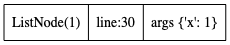
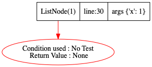
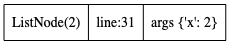
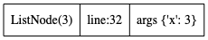
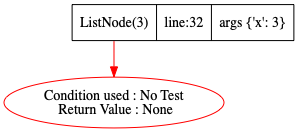
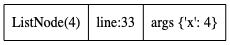
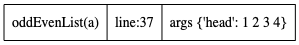
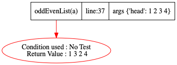

class ListNode:
def __init__(self, x):
self.val = x
self.next = None
self.prev = None
def __str__(self):
if not self.next: return str(self.val)
else: return str(self.val) + " " + str(self.next)
def __repr__(self):
return self.__str__()
def __eq__(self,other):
return self.__str__() == other.__str__()
def oddEvenList(head):
if head is None or head.next is None :return head
mainhead=head # watchvar btree:prev:next:val mainhead
firsteven=head.next # watchvar ref:mainhead:btree head
c=1
prev=head # watchvar ref:mainhead:btree prev
while(head.next is not None):
n=head.next
prev=head
head.next=head.next.next
head=n
c+=1
if c%2:head.next=firsteven
else:prev.next=firsteven
return mainhead
def go():
# https://leetcode.com/problems/odd-even-linked-list/
a = ListNode(1)
b= ListNode(2)
c = ListNode(3)
d = ListNode(4)
a.next = b
b.next = c
c.next = d
oddEvenList(a)
Step:1,New function call at Line:30
Code executed: a = ListNode(1)
Stack Trace generated

Step:2,Return seen at Line:5
Code executed: self.prev = None
Stack Trace generated

Step:3,New function call at Line:31
Code executed: b= ListNode(2)
Stack Trace generated

Step:4,Return seen at Line:5
Code executed: self.prev = None
Stack Trace generated

Step:5,New function call at Line:32
Code executed: c = ListNode(3)
Stack Trace generated

Step:6,Return seen at Line:5
Code executed: self.prev = None
Stack Trace generated

Step:7,New function call at Line:33
Code executed: d = ListNode(4)
Stack Trace generated

Step:8,Return seen at Line:5
Code executed: self.prev = None
Stack Trace generated
Step:9,New function call at Line:37
Code executed: oddEvenList(a)
Stack Trace generated

Step:10,Return seen at Line:27
Code executed: return mainhead
Stack Trace generated
